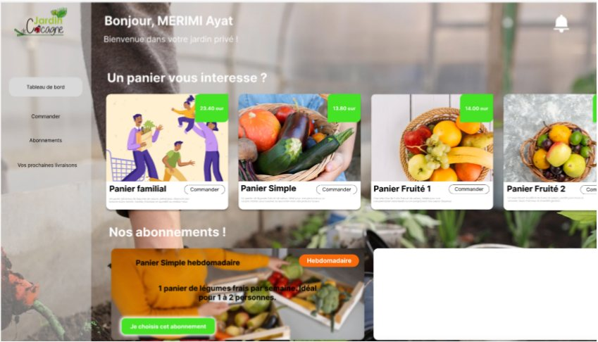

Jardin de Cocagne
Trois applications, une seule base de données.

Détail
Le périmètre
Parcours d'achat, back-office de livraisons et tournées, application Android de suivi. Rôles et permissions strictement séparés.
La règle que je me suis fixée
Aucune règle de gestion dans le client. Si une contrainte compte, elle est appliquée côté serveur et garantie par la base.